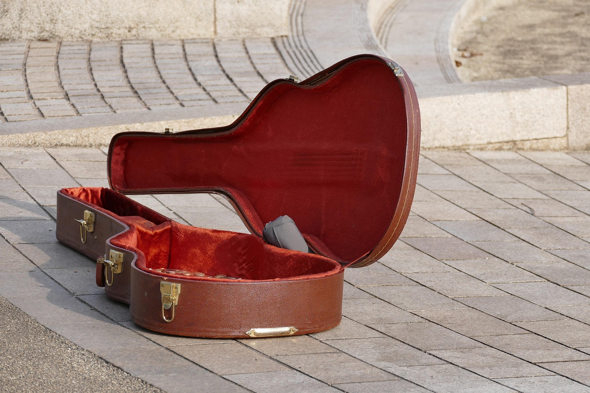

Essential Equipment to Start Playing Electric Guitar
To begin your electric guitar journey, you will need the following essential equipment:
Electric guitar: Your musical instrument.
Amplifier and instrument cable: Necessary to generate the desired sound on the guitar and connect to it.
-
Guitar pick: To pluck or strum the strings of the guitar to produce sound.
-
Guitar strap: To support the guitar while playing.
Additional Equipment to Enhance Your Playing
-
Effects pedals: Alter the sound of the instrument.
- Distortion: Adds gritty, overdriven tones typical in rock and metal.
- Delay: Creates echoes of the original sound.
- Chorus: Thickens sound, making it sound like multiple guitars playing together.
-
Tuner: Helps you to accurately tune your guitar strings to the correct pitch.
-
Guitar case: Protects your guitar during transport and storage. 
-
Cleaning kit: Helps with the cleaning and proper manutention of your instrument.
Where to Buy
For quality gear and trusted service, check out these reputable music equipment sellers: